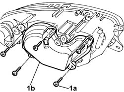
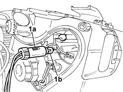

5540B49 BULB FOR SIDE LIGHT ONE LH OR RH OF ONE GAS DISCHARGE LIGHT CLUSTER RR WITH LIGHT CLUSTER REMOVED
- Path
- Procedures > 55 ELECTRICAL EQUIPMENT > 5540 EXTERIOR LIGHTING > 5540B HEADLAMPS > 5540B49 BULB FOR SIDE LIGHT ONE LH OR RH OF ONE GAS DISCHARGE LIGHT CLUSTER RR WITH LIGHT CLUSTER REMOVED
- Kind
- repair procedure (removal / refitting; the operation number is the code)
- Applies to
- all engines; all production periods
- Interactive page
- https://sloeber94.github.io/elrnDB-aGt/en/#/125001660
Applies to: all engines; all production periods
 Removing
Removing
 Refitting
Refitting1. Undo the fixing bolts (1a) and remove the protective bulb cover (1b).

Applies to: all engines; all production periods
1. Extract the (press-fit) bulb holder (1a) and remove the bulb (1b).

Applies to: all engines; all production periods
Refitting
RemovingCheck the condition and the cleanliness of the lamp.
Insert the bulb in the bulb holder.
Fit the bulb holder with bulb in its seat.
Place the protective bulb cover in position and secure it using the bolts.